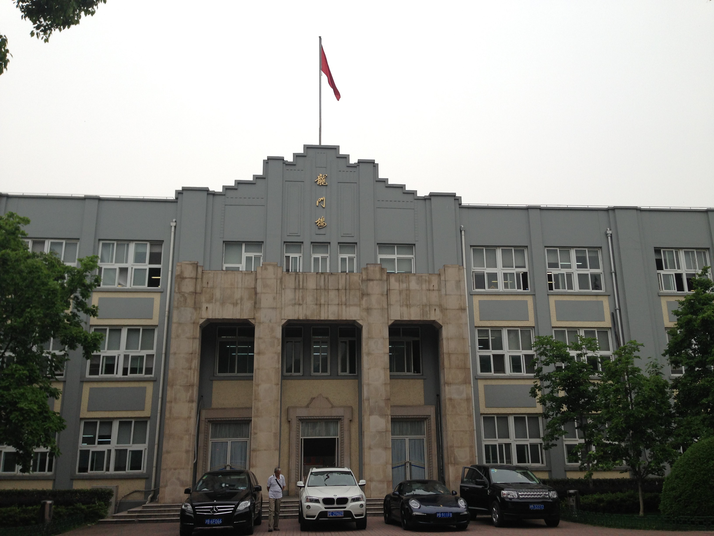
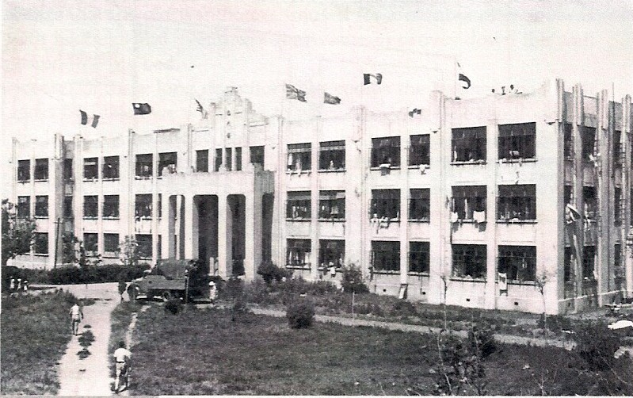
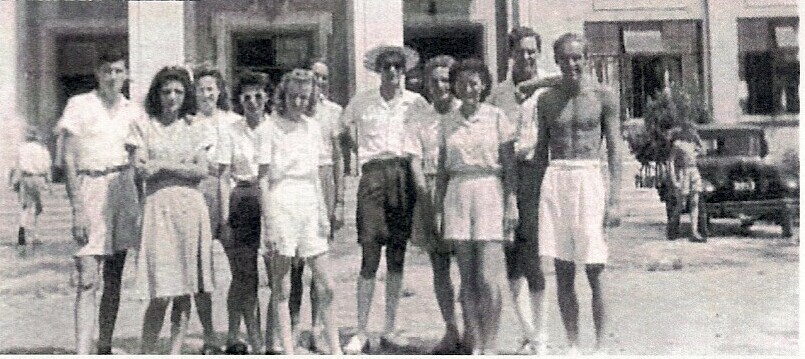

You should now be standing in front of the Long Mian Building,
which today is the Chinese High School. Behind you is the traffic
circle and the Gate at 400 Shangzong Rd. Known as F Block during
the Lunghwa era, it housed contained both billets for families as well
as the office of the commandant on the Third Floor.

On
August 15, the day the Japanese capitulation was announced over Radio
Tokyo, the internees raised flags of the Allied nations over F Block
and an impromptu band concert was held on the roof to celebrate the end
of the war.

A group of internees pose in front of F Block after the end of the war.
